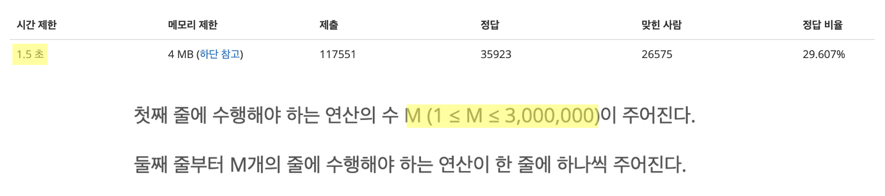
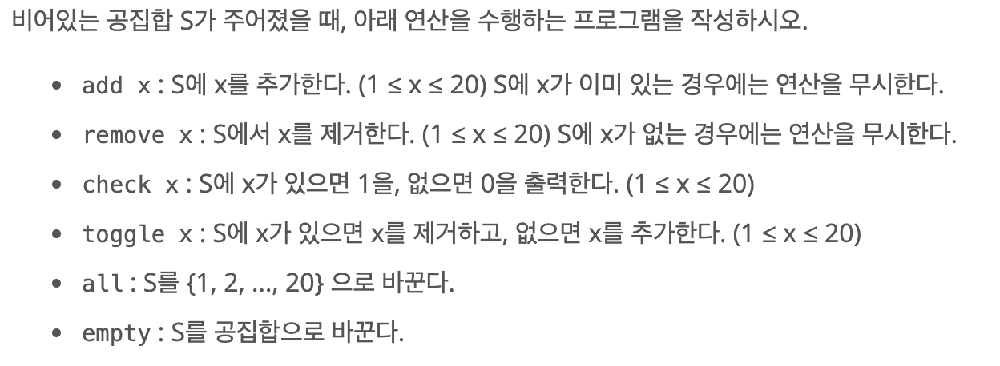
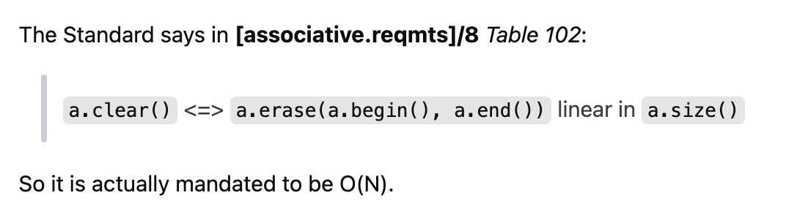

https://www.acmicpc.net/problem/11723
#문제접근
문제를 제출한 뒤 알고리즘 분류를 보니 "비트 마스킹" 알고리즘을 사용해야 하는 문제였던 것 같다.
시간제한이 1.5초인데 반해 연산의 수는 300만 개로 매우 많다.
하지만 아직 비트 마스킹 알고리즘에 대해 공부하지 않았기에 set 자료구조를 사용해 문제를 풀이했다.
set 자료구조를 사용해 문제를 풀이하기 위해선 가능한 모든 시간 최적화 방안을 도입해야만 했다.
 
set 자료구조 중에 hash table로 구현된 set 을 선택하였다.
hash table 은 삽입, 삭제 연산이 O(1) 만에 이루어지기에 다른 set 자료구조에 비해서 효율적이다.
물론 문제 출제자가 의도적으로 최악의 해시 충돌을 강제하는 테스트케이스를 다량으로 추가할 시 시간 복잡도가 O(N)이 되기에,
테스트케이스를 통과하지 못할 가능성도 있었다.
* JAVA 언어의 경우 HashSet 구현체를, C++ 언어의 경우 unordered_map STL 을 사용하면 된다.
[관련 포스팅]
Java HashSet vs LinkedHashSet vs TreeSet
#Java
1. 입력데이터가 300만개로 굉장히 많기에 Scanner 객체를 사용하면 시간초과가 발생한다.
BufferedReader를 사용해 입출력 시간을 최소화하자.
BufferedReader br = new BufferedReader(new InputStreamReader(System.in));
2. check command 처리 부분에서 System.out.println으로 바로 결과를 출력해 주면 시간초과가 발생한다.
StringBuilder 객체를 사용하여 출력 결과를 버퍼에 저장해 둔 뒤 한 번에 출력해야 한다.
StringBuilder sb = new StringBuilder();
for (int i = 0; i < m; i++) {
...
else if (command.equals("check")) {
Integer value = Integer.parseInt(commands[1]);
if (set.contains(value)) sb.append("1" + '\n');
else sb.append("0" + '\n');
}
...
}
System.out.println(sb.toString());
}
#전체 코드
package september;
import java.io.BufferedReader;
import java.io.IOException;
import java.io.InputStreamReader;
import java.util.Arrays;
import java.util.HashSet;
import java.util.List;
import java.util.Set;
public class BOJ11723 {
public static void main(String[] args) throws IOException {
Set<Integer> set = new HashSet<>();
BufferedReader br = new BufferedReader(new InputStreamReader(System.in));
StringBuilder sb = new StringBuilder();
int m = Integer.parseInt(br.readLine());
for (int i = 0; i < m; i++) {
String[] commands = br.readLine().split(" ");
String command = commands[0];
if (command.equals("add")) {
Integer value = Integer.parseInt(commands[1]);
set.add(value);
}
else if (command.equals("check")) {
Integer value = Integer.parseInt(commands[1]);
if (set.contains(value)) sb.append("1" + '\n');
else sb.append("0" + '\n');
}
else if (command.equals("remove")) {
Integer value = Integer.parseInt(commands[1]);
if (set.contains(value)) {
set.remove(value);
}
}
else if (command.equals("toggle")) {
Integer value = Integer.parseInt(commands[1]);
if (set.contains(value)) {
set.remove(value);
}
else {
set.add(value);
}
}
else if (command.equals("all")) {
set.clear();
for (int j = 1; j <= 20; j++) {
set.add(j);
}
}
else if (command.equals("empty")) {
set = new HashSet<Integer>();
}
}
System.out.println(sb.toString());
br.close();
}
}#C++
1. cin, cout 버퍼를 묶어주어 입출력 시 발생하는 시간을 최소화한다.
ios::sync_with_stdio(false);
cin.tie(NULL);
cout.tie(NULL);
2. "all", "empty" command를 처리하는 과정에서 clear 메서드를 사용했더니 시간초과가 발생했다.
c++ unordered_set의 clear method에 관한 내용을 stackoverflow에서 찾아보니 clear 연산은 처음부터 끝까지 모든원소를 순회하기에 O(N)만큼의 시간 복잡도가 소요된다고 한다.
따라서 clear 메서드를 사용하지 않고 직접 값을 대입해 주었다.

else if (command == "all") {
// set.clear();
set = {1, 2, 3, 4, 5, 6, 7, 8, 9, 10, 11, 12, 13, 14, 15, 16, 17, 18, 19, 20};
}
else if (command == "empty") {
set = {};
}
#전체 코드
#include <unordered_map>
#include <unordered_set>
using namespace std;
#include <iostream>
int main() {
ios::sync_with_stdio(false);
cin.tie(NULL);
cout.tie(NULL);
int m = 0;
cin >> m;
cin.ignore(); // cin buffer clear
unordered_set<int> set;
for (int i = 0; i < m; i++) {
// getline - 공백 기준 입력
string commands = "";
getline(cin, commands);
// String - Parsing
int delimiter = commands.find(" ");
string command = commands.substr(0, delimiter);
string oper = commands.substr(delimiter + 1);
if (command == "add") {
set.insert(stoi(oper));
}
else if (command == "remove") {
set.erase(stoi(oper));
}
else if (command == "check") {
// set에 원소가 존재하는 경우
// end() iterator를 반환하지 않는 경우
if (set.find(stoi(oper)) != set.end()) {
cout << "1" << '\n';
}
// set에 원소가 존재하지 않는 경우
else {
cout << "0" << '\n';
}
}
else if (command == "toggle") {
// set에 원소가 존재하는 경우
if (set.find(stoi(oper)) != set.end()) {
set.erase(stoi(oper));
}
else {
set.insert(stoi(oper));
}
}
else if (command == "all") {
// set.clear();
set = {1, 2, 3, 4, 5, 6, 7, 8, 9, 10, 11, 12, 13, 14, 15, 16, 17, 18, 19, 20};
}
else if (command == "empty") {
set = {};
}
}
return 0;
}